图5-2
X 2 ：X 的2次幂就是用自己乘以自己
32 ＝3×3＝9
科学计算器很常见，你甚至可以在网络上免费使用它。尽快学会如何使用它，可以帮助你学习数学基础知识和技能并节省你的宝贵时间，还能帮你执行高级操作。在某些情况下，甚至可以将你的成果用图形的形式展示出来。

这一节将向你展示本书前面所介绍的基本原理、计算公式和函数的操作步骤，并向你展示一些高级操作。
使用科学计算器可以将你的数学能力提升到一个更高水平。
科学计算器上需要查找的东西：
■注意下面的建议和提示，在使用前请你熟悉自己的计算器上的特定的操作键和函数选项。
■殊功能键存取：大多数键可以执行多个函数，你可以通过按键来访问这些文件，见图5-1。
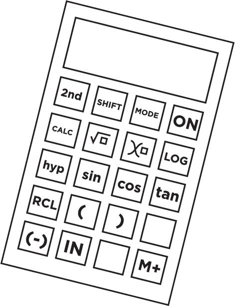
图5-1
■理解（-）和-键的区别。第一个是负号，第二个是减法操作。
■学习如何存储公式中的变量。
■学习如何使用数字输入函数等价数，如f（x ）到x 。
例如：
■找到你经常要用的基本键，如幂键（用于指数运算）、平方根键和逻辑键，见图5-2。
图5-2
X 2 ：X 的2次幂就是用自己乘以自己
32 ＝3×3＝9
■查找统计键，例如平均值，并学习如何使用它。在某些情况下，你必须输入数字并选择求和键。在计算器中输入数据值，然后选择平均值，见图5-3。
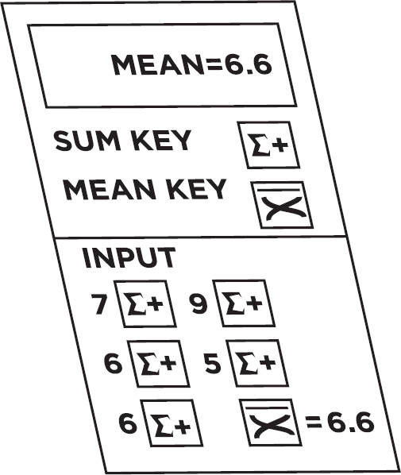
图5-3
计算一个数的平均数
■图5-4介绍了一个有用的方法，在计算器上用勾股定理计算图上两点之间的距离。
你可以用勾股定理求解图上两点之间的距离值。
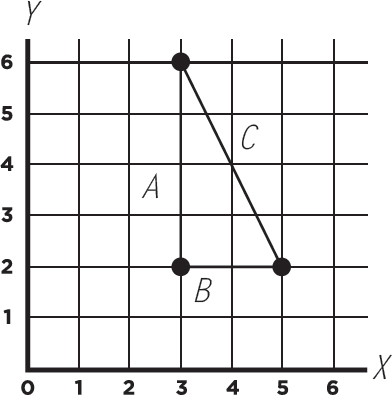
图5-4
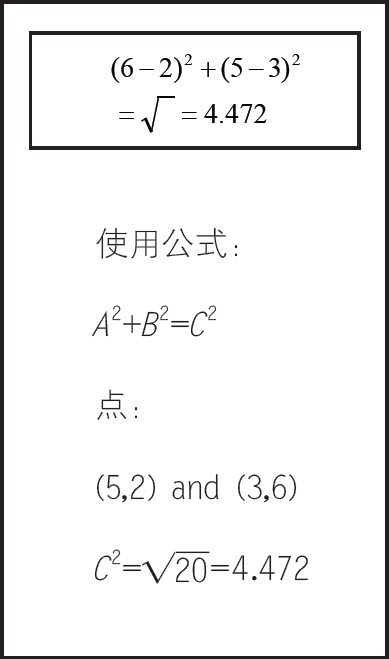
■虽然平均值函数提供了关于数据集的信息，但是你可能还想进一步查看组内标准差。组内标准差提供了这组数据平均值的离散程度，展现了这组数据的质量和性能，见图5-5。
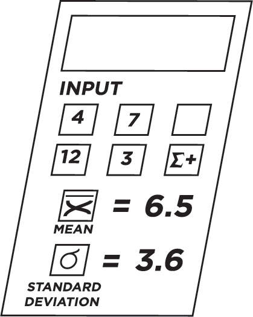
图5-5
计算一组数字集合的标准差
■你可以在排除风的阻力因素的前提下，用自由落体公式计算物体下落的高度和时间。要求得一个物体坠落的高度，当你知道坠落的时间时，使用此公式：
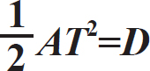
A ＝加速率（每秒10米）
T ＝时间（在本例中为2秒）
D ＝距离（物体坠落的高度）
有了这些信息，就可以计算自由下落的高度，如下：
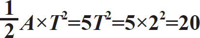
这个物体从20米高处落下，两秒钟后落到地面，见图5-6。
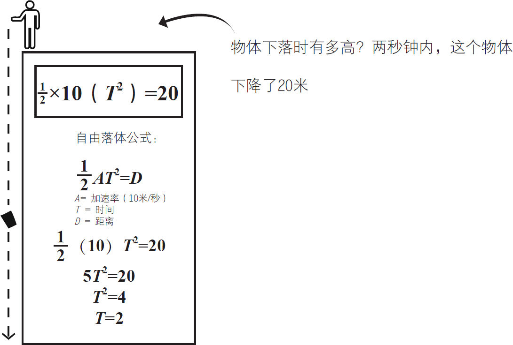
图5-6
■相反，如果你知道下落物体的高度，你就可以计算出下落的时间。
公式：
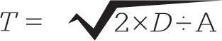
T ＝时间
D ＝距离（10米）
A ＝加速率（每秒5米）

图5-7显示物体从10米高空下落到地面需要两秒钟。
当你知道所处的高度时，计算物体下落的时间。
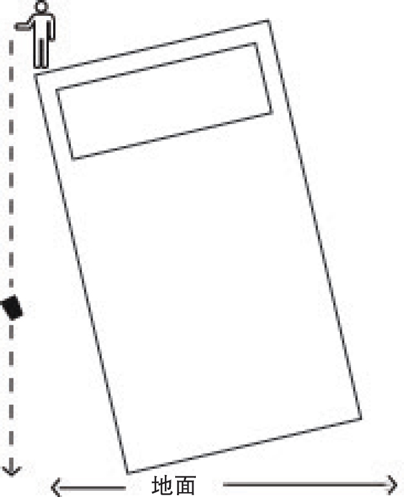
图5-7
■你的科学计算器在计算复杂的公式，比如风寒指数时可以派上用场。
输入下面的风寒指数公式。
公式：
35.74＋（0.6251）T -（35.75）V 0.16 ＋（0.4275）TV 0.16
T ＝华氏温度
V ＝风速（千米/每小时）
下面是计算温度为40度、风速为每小时16千米时的风寒指数的过程：
35.74＋（0.6251）（40）–（35.75）×160.16 ＋（0.4275）×40×16×0.16
＝35.74＋25.00–35.75×1.56＋17.7×16×0.16
＝60.74–55.77＋43.78
＝48.75
风寒指数＝48.75（°F）
■如果计算器包含表函数，则可以生成代数函数。
图5-8显示了使用表函数的计算器生成函数：
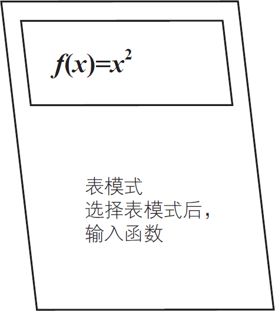
图5-8
f （x ）＝
然后输入x 的函数
在这个例子中输入X 2 （x 平方）
计算器将显示两列
左栏显示1到4的数字
右栏显示x 函数的结果，等于x 平方
继续用你的科学计算器进行各种公式和函数的计算，这样当你需要做题时，你就可以很快知道结果。
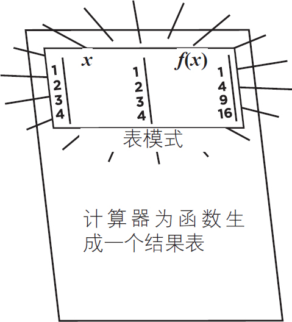
图5-9
在给出求解微分方程和积分方程的方法之前，你应该学习以下两个部分。你将学习如何扩展和化简代数方程以及如何用微积分中的幂规则来进行计算。